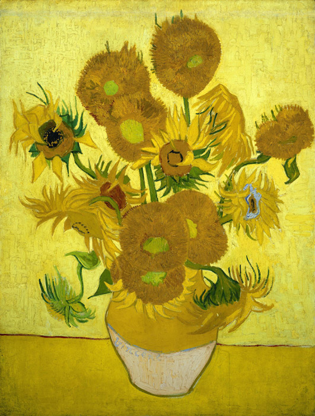

作品名 「ひまわり（15本）」
花言葉 「あなただけを見つめる」「憧れ」「情熱」
向日葵
「あなただけを
見つめる」
太陽の方向を向いてくるくると回ることから名付けられたひまわり。その性質にちなみ「私はあなただけを見つめる」という花言葉がつきました。また、英語では「Sunflower（サンフラワー）」と呼ばれその姿が太陽に似ていることから「太陽の花」と呼ばれています。
ひまわり（15本）
フィンセント・ファン・ゴッホ
ゴッホのひまわりの絵は、ゴッホの最も有名な絵の 1つ。向日葵をモチーフとした油彩の絵画は、7点が制作されており、このうち6点が現存している。背景も含めて全体的に鮮やかな黄色で描かれており、それはゴッホが誘った画家達と共同生活をする為にアルルで借りた「黄色の家」を表しているという。ゴッホにとってのヒマワリは、明るい南フランスの太陽、またユートピアの象徴であったといわれています。鮮やかな色彩と生き生きとした感覚が特徴的であり、今なお人々を魅了し続けています。
| 作品名 | ひまわり（15本） |
| 作者 | フィンセント・ファン・ゴッホ |
| 制作年 | 1888年 |
| 種類 | キャンバス・油彩 |
| 寸法 | 92.1cm × 73cm |
| 所蔵 | ファン・ゴッホ美術館 |